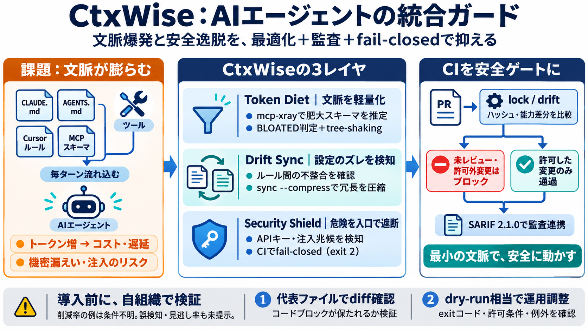

Claude Code vs Codex vs Cursor: The Best AI Coding Tool in 2026 - DEV Community
All three tools compete here, but they approach it differently. Claude Code is the most terminal-native and integrates d…

AIコーディングエージェントの「文脈爆発（token肥大）」と「安全逸脱（機密漏えい・注入）」を、最適化＋監査＋fail-closedで同時に抑えます。
エージェントは毎ターン、CLAUDE.md / AGENTS.md / Cursorルール / MCPツールJSONスキーマなど大量のコンテキストを読み込み、コスト・待ち時間・攻撃面が増えます。
入口で止め、参照を軽量化し、設定の整合性を保つことで、最小のコンテキストで安全に動かします。
lock / drift（ハッシュ化・能力差分比較）とSARIF連携で、未レビュー編集や許可されない変更をPR単位でブロックします。
All three tools compete here, but they approach it differently. Claude Code is the most terminal-native and integrates d…
### Interface, tool use, repo context, review, team workflow Interface is the first fork: Codex and Claude Code are ter…
The landscape is moving fast: The real competition isn’t Claude Code vs Cursor vs GPT-5.3-Codex. It’s “which combinati…
[8:18] Claude Code is going to be the best when it comes to price, you know, because it has a flat fee, but the others d…
Provide a ticket reference and MCP will reproduce the bug, work with Claude Code to fix it, verify the fix, and confirm …